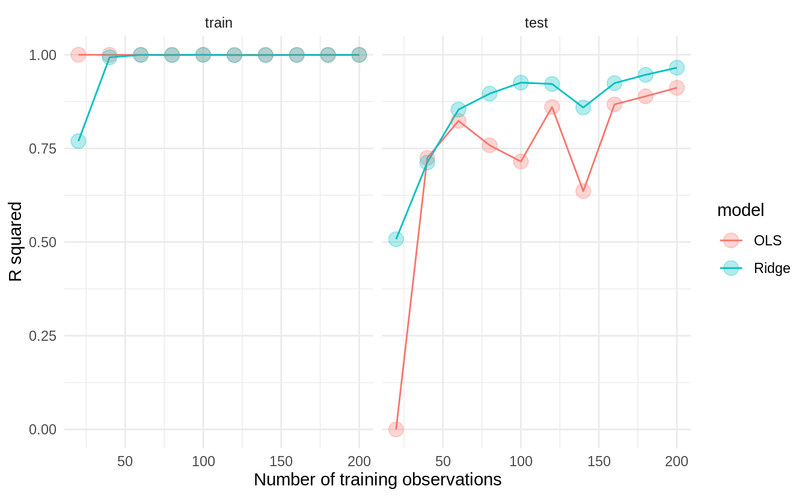
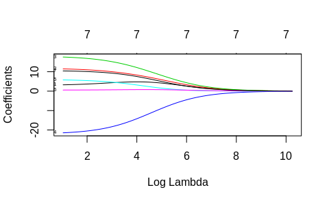
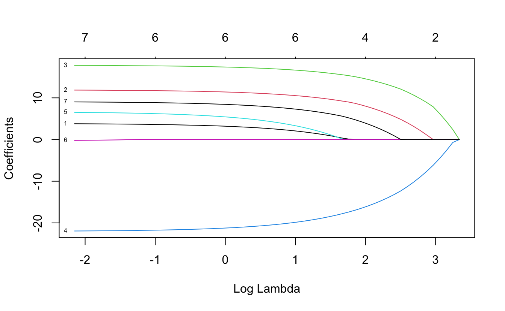
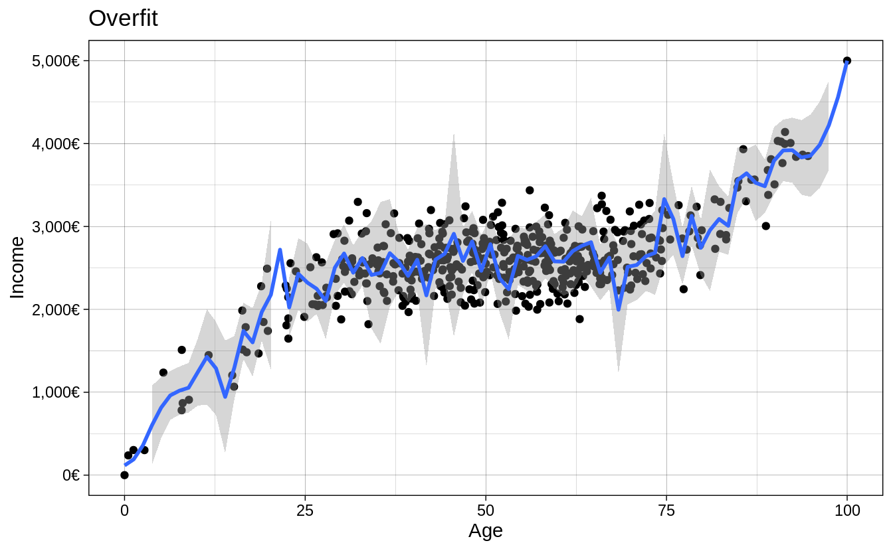

Chapter 2 Regularization
Regularization is a common topic in machine learning and bayesian statistics. In this chapter, we will describe the three most common regularized linear models in the machine learning literature and introduce them in the context of the PISA data set. At the end of the document you’ll find exercises that will put your knowledge to the test. Most of the material is built upon Boehmke and Greenwell (2019) and James et al. (2013), which can be used as reference.
2.1 Ridge regularization
Do no let others fool you into thinking that ridge regression is a fancy artificial intelligence algorithm. Are you familiar with linear regression? If you are, then ridge regression is just an adaptation of linear regression.
The whole aim of linear regression, or Ordinary Least Squares (OLS), is to minimize the sum of the squared residuals. In other words, fit N number of regression lines to the data and keep only the one that has the lowest sum of squared residuals. In simple formula jargon, OLS tries to minimize this:
\[\begin{equation} RSS = \sum_{k = 1}^n(actual_i - predicted_i)^2 \end{equation}\]
For each fitted regression line, you compare the predicted value (\(predicted_i\)) versus the actual value (\(actual_i\)), square it, and add it all up. Each fitted regression line then has an associated Residual Sum of Squares (RSS) and the linear model chooses the line with the lowest RSS.
Note: Social scientists are familiar with the RSS and call it just by it’s name. However, be aware that in machine learning jargon, the RSS belongs to a general family called loss functions. Loss functions are metrics that evaluate the fit of your model and there are many around (such as AIC, BIC or R2).
Ridge regression takes the previous RSS loss function and adds one term:
\[\begin{equation} RSS + \lambda \sum_{k = 1}^n \beta^2_j \end{equation}\]
The term on the right is called a shrinkage penalty because it forces each coefficient \(\beta_j\) closer to zero by squaring it. The shrinkage part is clearer once you think of this term as forcing each coefficient to be as small as possible without compromising the Residual Sum of Squares (RSS). In other words, we want the smallest coefficients that don’t affect the fit of the line (RSS).
An intuitive example is to think of RSS and \(\sum_{k = 1}^n \beta^2_j\) as two separate things. RSS estimates how the model fits the data and \(\sum_{k = 1}^n \beta^2_j\) limits how much you overfit the data. Finally, the \(\lambda\) between these two terms (called lambda) can be interpreted as a “weight”. The higher the lambda, the higher the weight that will be given to the shrinkage term of the equation. If \(\lambda\) is 0, then multiplying 0 by \(\sum_{k = 1}^n \beta^2_j\) will always return zero, forcing our previous equation to simply be reduced to the single term \(RSS\).
Why is there a need to “limit” how well the model fits the data? Because we, social scientists and data scientists, very commonly overfit the data. The plot below shows a simulation from Simon Jackson where we can see that when tested on a training set, OLS and Ridge tend to overfit the data. However, when tested on the test data, ridge regression has lower out of sample error as the \(R2\) is higher for models with different observations.

The strength of the ridge regression comes from the fact that it compromises fitting the training data really well for improved generalization. In other words, we increase bias (because we force the coefficients to be smaller) for lower variance (making our predictions more robust). In other words, the whole gist behind ridge regression is penalizing very large coefficients for better generalization on new data.
Having that intuition in mind, there is one important thing to keep in mind: the predictors of the ridge regression need to be standardized. Why is this the case? Because due to the scale of a predictor, its coefficient can be more penalized than other predictors. Suppose that you have the income of a particular person (measured in thousands per months) and time spent with their families (measured in seconds) and you’re trying to predict happiness. A one unit increase in salary could be penalized much more than a one unit increase in time spent with their families just because a one unit increase in salary can be much bigger due to it’s metric.
In R, you can fit a ridge regression using tidymodels and tidyflow. Let’s load the packages that we will work with and read the data:
library(tidymodels)
library(tidyflow)
data_link <- "https://raw.githubusercontent.com/cimentadaj/ml_socsci/master/data/pisa_us_2018.csv"
pisa <- read.csv(data_link)We will construct our tidyflow step by step. We begin with the data and then separate the training and test data. All of our modeling will be performed on the training data and the test data is saved for later (the test data must be completely ignored until you have your final tuned model). The second step is specifying the variables in the model and scaling all of them, as I have explained, we want to normalize all variables such that no variable gets more penalized than other due to their metric.
# Specify all variables and scale
rcp <-
# Define dependent (math_score) and independent variables
~ recipe(math_score ~ MISCED + FISCED + HISEI + REPEAT + IMMIG + DURECEC + BSMJ, data = .) %>%
# Scale all predictors (already knows it's the independent variables)
step_scale(all_predictors())
tflow <-
tidyflow(seed = 231141) %>%
plug_data(pisa) %>%
plug_split(initial_split, prop = .7) %>%
# Add the recipe with all variables and scale
plug_recipe(rcp)
tflow## ══ Tidyflow ════════════════════════════════════════════════════════════════════
## Data: 4.84K rows x 501 columns
## Split: initial_split w/ prop = ~0.7
## Recipe: available
## Resample: None
## Grid: None
## Model: NoneThe argument prop controls the proportion of the sample that will be in the training data. Here we specify it to be .7, 70% of the data. The third step is specifying the tuning parameters. The ridge regression has a parameter called penalty which needs to be set by us. penalty is the “weight” term in the ridge equation, which controls how much weight do we want to give to the “shrinkage penalty” (this is the \(\lambda\) from the equation). If this penalty is set to 0, it means we attach no weight to the penalty term and we will get the same result over OLS. Let’s try that:
############################# Ridge regression ################################
###############################################################################
regularized_reg <-
set_engine(
# mixture specifies the type of penalized regression: 0 is ridge regression
linear_reg(penalty = 0, mixture = 0),
"glmnet"
)
model1 <-
tflow %>%
plug_model(regularized_reg) %>%
fit()
# Get ridge coefficients
mod <- model1 %>% pull_tflow_fit() %>% .[["fit"]]
ridge_coef <- predict(mod, s = 0, type = "coefficients")
############################# Linear model ####################################
###############################################################################
model2 <-
tflow %>%
plug_model(set_engine(linear_reg(), "lm")) %>%
fit()
lm_coef <- model2 %>% pull_tflow_fit() %>% .[["fit"]] %>% coef()
############################# Comparing model #################################
###############################################################################
comparison <-
data.frame(coefs = names(lm_coef),
`Linear coefficients` = unname(round(lm_coef, 2)),
`Ridge coefficients` = round(as.vector(ridge_coef), 2))
knitr::kable(comparison)| coefs | Linear.coefficients | Ridge.coefficients |
|---|---|---|
| (Intercept) | 329.37 | 331.55 |
| MISCED | 3.88 | 4.17 |
| FISCED | 11.93 | 11.61 |
| HISEI | 17.85 | 17.36 |
| REPEAT | -22.03 | -21.41 |
| IMMIG | 6.66 | 6.41 |
| DURECEC | -0.33 | -0.27 |
| BSMJ | 9.10 | 8.96 |
Coming from a social science background, it might seem counterintuitive that the researcher has to specify tuning parameters for the model. In traditional social science statistics, models usually estimate similar values internally and the user doesn’t have to think about them. However, there are strategies already implemented to explore the combination of many possible values. With our previous example, we have to add tune() to the penalty argument and add a grid for the model to search for the best one:
# Here we add the cross-validation and grid
tflow <-
tflow %>%
# Cross-validation
plug_resample(vfold_cv, v = 5) %>%
# Grid
plug_grid(grid_regular)
regularized_reg <- update(regularized_reg, penalty = tune())
res <-
tflow %>%
# Update the model to specify that `penalty` will be tuned
plug_model(regularized_reg) %>%
fit()
final_ridge <- complete_tflow(res, metric = "rmse")
final_ridge %>%
pull_tflow_fit() %>%
.[["fit"]] %>%
plot(xvar = "lambda", label = TRUE)
Here we can see how our coefficients are affected by increasing the weight of the penalty parameter. Each of those lines are the coefficients for the variables. The x axis contains the penalty values and we can see how as the penalty increases, the size of the coefficients is shrinking to be close to zero. By around the log of penalty around 8 nearly all coefficients are shrinked very close to zero. This plot is just an exercise to understand how the ridge regression works. In other words, we can figure out the best lambda automatically:
## # A tibble: 1 x 1
## penalty
## <dbl>
## 1 0.0000000001However, there’s no need to calculate this, as complete_tflow figures it out for you (as you can see in the code chunk above, complete_tflow extracts this automatically and fits the best model). We can calculate the \(RMSE\) of the training data from the best model and compare it to the predictions on the testing data:
train_rmse_ridge <-
final_ridge %>%
predict_training() %>%
rmse(math_score, .pred)
holdout_ridge <-
final_ridge %>%
predict_testing() %>%
rmse(math_score, .pred)
train_rmse_ridge$type <- "training"
holdout_ridge$type <- "testing"
ridge <- as.data.frame(rbind(train_rmse_ridge, holdout_ridge))
ridge$model <- "ridge"
ridge## .metric .estimator .estimate type model
## 1 rmse standard 76.64458 training ridge
## 2 rmse standard 78.21517 testing ridgeThe testing error (RMSE) is higher than the training error, as expected, as the training set nearly always memorizes the data better for the training.
2.2 Lasso regularization
The Lasso regularization is very similar to the ridge regularization where only one thing changes: the penalty term. Instead of squaring the coefficients in the penalty term, the lasso regularization takes the absolute value of the coefficient.
\[\begin{equation} RSS + \lambda \sum_{k = 1}^n |\beta_j| \end{equation}\]
Although it might not be self-evident from this, the lasso reguralization has an important distinction: it can force a coefficient to be exactly zero. This means that lasso does a selection of variables which have big coefficients while not compromising the RSS of the model. The problem with ridge regression is that as the number of variables increases, the training error will almost always improve but the test error will not.
For example, if we define the same model from above using a lasso, you’ll see that it forces coefficients to be exactly zero if they don’t add anything relative to the RSS of the model. This means that variables which do not add anything to the model will be excluded unless they add explanatory power that compensates the size of their coefficient. Here’s the same lasso example:
regularized_reg <- update(regularized_reg, mixture = 1)
res <-
tflow %>%
plug_model(regularized_reg) %>%
fit()
final_lasso <- complete_tflow(res, metric = "rmse")
final_lasso %>%
pull_tflow_fit() %>%
.[["fit"]] %>%
plot(xvar = "lambda", label = TRUE)
In contrast to the ridge regression, where coefficients are forced to be close to zero, the lasso penalty actually forces some coefficients to be zero. This property means that the lasso makes a selection of the variables with the higher coefficients and eliminates those which do not have a strong relationship. Lasso is usually better at model interpretation because it removes redundant variables while ridge can be useful if you want to keep a number of variables in the model, despite them being weak predictors (as controls, for example).
To check the final model and it’s error, we can recycle the code from above and adapt it to the lasso:
train_rmse_lasso <-
final_lasso %>%
predict_training() %>%
rmse(math_score, .pred)
holdout_lasso <-
final_lasso %>%
predict_testing() %>%
rmse(math_score, .pred)
train_rmse_lasso$type <- "training"
holdout_lasso$type <- "testing"
lasso <- as.data.frame(rbind(train_rmse_lasso, holdout_lasso))
lasso$model <- "lasso"
lasso## .metric .estimator .estimate type model
## 1 rmse standard 76.63928 training lasso
## 2 rmse standard 78.23457 testing lassoSo far, we can check which model is performing better:
## .metric .estimator .estimate type model
## 1 rmse standard 76.64458 training ridge
## 2 rmse standard 78.21517 testing ridge
## 3 rmse standard 76.63928 training lasso
## 4 rmse standard 78.23457 testing lassoCurrently the ridge regression has a very minor advantaged over the lasso yet the difference is probably within the margin of error. Depending on your aim, you might want to choose either of the models. For example, if our models contained a lot of variables, lasso might be more interpretable as it reduces the number of variables. However, if you have reasons to believe that keeping all variables in the model is important, then ridge provides an advantage.
2.3 Elastic Net regularization
If you’re aware of ridge and lasso, then elastic net regularization is a logical step. Elastic Net (the name sounds fancy, but it is also an adaptation of OLS) combines both penalties to form one single equation.
Here we define our ridge penalty:
\[ridge = \lambda \sum_{k = 1}^n \beta_j^2\]
And here we define our lasso penalty:
\[lasso = \lambda \sum_{k = 1}^n |\beta_j|\]
Elastic net regularization is the addition of these two penalties in comparison to the RSS:
\[RSS + lasso + ridge\]
I think the best explanation for elastic net regularization comes from Boehmke and Greenwell (2019):
Although lasso models perform feature selection, when two strongly correlated features are pushed towards zero, one may be pushed fully to zero while the other remains in the model. Furthermore, the process of one being in and one being out is not very systematic. In contrast, the ridge regression penalty is a little more effective in systematically handling correlated features together. Consequently, the advantage of the elastic net penalty is that it enables effective regularization via the ridge penalty with the feature selection characteristics of the lasso penalty.
Essentially, you now have two tuning parameters. In the grid of values, instead of specifying a mixture of 0 (ridge) or 1 (lasso), tidyflow will slide through several values of mixture ranging from 0 to 1 and compare that to several values of lambda. This is formally called a grid search.
We can recycle the same code from above:
regularized_reg <- update(regularized_reg, mixture = tune())
res <-
tflow %>%
plug_model(regularized_reg) %>%
fit()
final_elnet <- complete_tflow(res, metric = "rmse")
train_rmse_elnet <-
final_elnet %>%
predict_training() %>%
rmse(math_score, .pred)
holdout_elnet <-
final_elnet %>%
predict_testing() %>%
rmse(math_score, .pred)
train_rmse_elnet$type <- "training"
holdout_elnet$type <- "testing"
elnet <- as.data.frame(rbind(train_rmse_elnet, holdout_elnet))
elnet$model <- "elnet"
elnet## .metric .estimator .estimate type model
## 1 rmse standard 76.63928 training elnet
## 2 rmse standard 78.23457 testing elnetThe RMSE of the elastic net is somewhat lower than then ridge and lasso but also probably within the margin of error. Let’s compare it visually:
model_comparison <- rbind(model_comparison, elnet)
model_comparison %>%
ggplot(aes(model, .estimate, color = type, group = type)) +
geom_point(position = "dodge") +
geom_line() +
scale_y_continuous(name = "RMSE") +
scale_x_discrete(name = "Models") +
theme_minimal()
2.4 Exercises
The Fragile Families Challenge is a study that aimed to predict a series of indicators of children at age 15 only using data from ages 0 to 9. With this challenge, the principal investigators wanted to test whether skills such as cognitive and non-cognitive abilities were correctly predicted. With that idea in mind, they were interested in following up children that beat the ‘predictions’: those children that exceeded the model’s prediction, for example given their initial conditions.
Using a similarly constructed non-cognitive proxy, I’ve created a non-cognitive index using the PISA 2018 for the United States which is the average of the questions:
- ST182Q03HA - I find satisfaction in working as hard as I can.
- ST182Q04HA - Once I start a task, I persist until it is finished.
- ST182Q05HA - Part of the enjoyment I get from doing things is when I improve on my past performance.
- ST182Q06HA - If I am not good at something, I would rather keep struggling to master it than move on to something I may […]
The scale of the index goes from 1 to 4, where in 4 the student strongly agrees and 1 is they completely disagree. In other words, this index shows that the higher the value, the higher the non cognitive skills. You can check out the complete PISA codebook here.
In these series of exercises you will have to try different models that predict this index of non-cognitive skills, perform a grid search for the three models and compare the predictions of the three models.
First, read in the data with:
library(tidymodels)
library(tidyflow)
data_link <- "https://raw.githubusercontent.com/cimentadaj/ml_socsci/master/data/pisa_us_2018.csv"
pisa <- read.csv(data_link)1. Create a tidyflow with a split
- Begin with the data
pisa - To plug a split, use
initial_split
Remember to set the seed to 2341 so that everyone can compare their results.
2. Run a ridge regression with non-cognitive as the dependent variable
Plug in a formula (hint, look at
?plug_formula) and use as many variables as you want (you can reuse the previous variables from the examples or pick all of them). A formula of the likenoncogn ~ .will regressnoncognon all variables.Plug in the ridge regression with
penaltyset to0.001(hint: remember to setmixtureto the value corresponding to the ridge regression)Fit the ridge model (with
fit)Predict on the training data with
predict_trainingand explore the \(R^2\) (rsq) and \(RMSE\) (rmse).
3. Add a recipe to scale all of the predictors and rerun the previous model
Drop the formula from the
tidyflowwithdrop_formulaAdd a recipe with the same formula you had, but including the
step_scalefor all predictorsRerun the model and extract the \(R^2\) and \(RMSE\)
How does the \(R^2\) and \(RMSE\) change? Was there an impact in change?
4. Adapt the previous model to do a grid search of penalty values
- Add a cross-validation resample (
vfold_cv) - Add a tuning grid (
grid_regular) and specifylevels = 10. This will create a tuning grid of 10 values - Update the
penaltyparameter to betuned - Run the grid search (
fit) - Extract the tuning grid (
pull_tflow_fit_tuning) and visualizeautoplot
Is there a pattern with the improvement/decrease of the metrics of fit with respect to the penalty?
5. Run a lasso regression with the same specification as above
- Update the model to have a mixture of
1(this is specifying that we want a lasso) - Run the grid search (
fit) - Extract the tuning grid (
pull_tflow_fit_tuning) and visualizeautoplot
Which model is performing better? Ridge or Lasso? Can you comment on the pattern of the penalty between ridge and lasso?
6. Run an elastic net regression on non cognitive skills
- Update the model to have a
tuned mixture - Replace the model in the
tidyflowwith the elastic net model - Run the grid search (
fit) - Extract the tuning grid (
pull_tflow_fit_tuning) and visualizeautoplot
> Answer
elnet_mod <- update(lasso_mod, mixture = tune())
m5 <-
tflow %>%
replace_model(elnet_mod) %>%
fit()
m5 %>%
pull_tflow_fit_tuning() %>%
autoplot()
# Additional plot with standard error
library(tidyr)
m5 %>%
pull_tflow_fit_tuning() %>%
collect_metrics() %>%
pivot_longer(penalty:mixture) %>%
mutate(low = mean - (std_err * 2),
high = mean + (std_err * 2)) %>%
ggplot(aes(value, mean)) +
geom_point() +
geom_errorbar(aes(ymin = low, ymax = high)) +
facet_grid(.metric ~ name)7. Compare the three models
- Finalize the three models (the ridge model, the lasso model and the elastic net model) with
complete_tflow. Remember to set themetric! - Use the three finalized models (the ones that were produced by
complete_tflow) topredict_trainingandpredict_testingon each one - Calculate the
rmseof the three models on both training and testing - Visualize the three models and their error for training/testing
- Comment on which models is better in out-of-sample fit
- Is it better to keep the most accurate model or a model that includes relevant confounders (even if they’re relationship is somewhat weak)?
> Answer
# Since we will be repeating the same process many times
# let's write a function to predict on the training/testing
# and combine them. This function will accept a single
# model and produce a data frame with the RMSE error for
# training and testing. This way, we can reuse the code
# without having to copy everything many times
calculate_err <- function(final_model, type_model = NULL) {
final_model <- complete_tflow(final_model, metric = "rmse")
err_train <-
final_model %>%
predict_training() %>%
rmse(noncogn, .pred)
err_test <-
final_model %>%
predict_testing() %>%
rmse(noncogn, .pred)
err_train$type <- "train"
err_test$type <- "test"
res <- as.data.frame(rbind(err_train, err_test))
res$model <- type_model
res
}
final_res <-
rbind(
calculate_err(m3, "ridge"),
calculate_err(m4, "lasso"),
calculate_err(m5, "elnet")
)
final_res %>%
ggplot(aes(model, .estimate, color = type)) +
geom_point() +
theme_minimal()
## BONUS
## Fit a linear regression and compare the four models
## What is the best model to pick considering both accuracy and simplicity?References
Boehmke, Brad, and Brandon M Greenwell. 2019. Hands-on Machine Learning with R. CRC Press.
James, Gareth, Daniela Witten, Trevor Hastie, and Robert Tibshirani. 2013. An Introduction to Statistical Learning. Vol. 112. Springer.